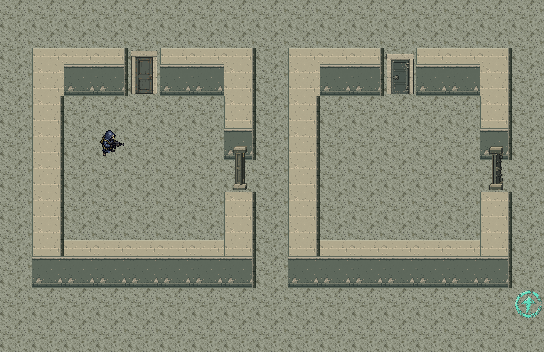
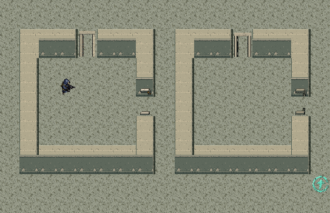

浅石色门框、灰绿木门与深色加固钢门。32×48原生透明图，向北抬高16px并保留原落脚位置；原有交互、门洞轴线、开关与碰撞规则不变。开门图中间为真实透明通路。
imagegen提示词与原稿 · 验证记录 · 场景素材库 · 地图编辑器
door · 原稿
door
door_open · 原稿
door_open
door_side · 原稿
door_side
door_side_open · 原稿
door_side_open
sdoor · 原稿
sdoor
sdoor_open · 原稿
sdoor_open
sdoor_side · 原稿
sdoor_side
sdoor_side_open · 原稿
sdoor_side_open

